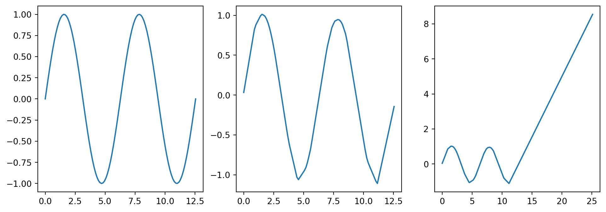

You can use Google colab if unable to run local Jupyter Notebooks.
In cell:
!pip install numpy py-pde tensorflow matplotlib
#Import packagesfrom tensorflow.keras.models import Sequentialfrom tensorflow.keras.layers import Denseimport numpy as npimport matplotlib.pyplot as plt
2022-10-06 13:45:52.099388: I tensorflow/core/platform/cpu_feature_guard.cc:193] This TensorFlow binary is optimized with oneAPI Deep Neural Network Library (oneDNN) to use the following CPU instructions in performance-critical operations: SSE4.1 SSE4.2 AVX AVX2 FMA
To enable them in other operations, rebuild TensorFlow with the appropriate compiler flags.
Learning a simple model
As a quick example, we’ll try to fit a wide, shallow neural network to \(sin(x)\) on \([0, 4\pi]\). We pick a network with a single layer, using ReLU as the activation function. We create a set of sample data \(\overline{X},\overline{Y}\), then try to fit the network \(N(x_i,\beta) \approx y_i\)\[
\beta^* = \text{argmin} \sum (N(x_i;\beta)-y_i)^2
\] From the universal approximation theorem, we know that some network exists which can approximate this curve to any precision, however it’s unclear that the network we discover from our optimization problem will be that network.
# Generate sin dataxmin_s =0xmax_s=4*np.pinx_s =100x_s= np.linspace(xmin_s,xmax_s,nx_s)y_s= np.sin(x_s)# Build a modelmodel_s = Sequential()model_s.add(Dense(700, input_shape=(1,), activation='relu'))model_s.add(Dense(1))model_s.compile(loss ='mae',optimizer ='adam')model_s.fit(x_s,y_s,epochs=10000,batch_size =25, verbose =0)# Make Predictiony_pred_s = model_s.predict(x_s) # Prediction with training datax_test_s = np.linspace(xmin_s,2*xmax_s,4*nx_s)y_test_s = model_s.predict(x_test_s)# Plot Resultsplt.figure(figsize = (12,4))plt.plot(x_test_s,y_test_s)plt.subplot(1,3,1)plt.plot(x_s,y_s)plt.subplot(1,3,2)plt.plot(x_s,y_pred_s)plt.subplot(1,3,3)plt.plot(x_test_s,y_test_s)
/tmp/ipykernel_77088/2768104420.py:23: MatplotlibDeprecationWarning: Auto-removal of overlapping axes is deprecated since 3.6 and will be removed two minor releases later; explicitly call ax.remove() as needed.
plt.subplot(1,3,1)

Learning a PDE
We consider a simple 1D transport equation with periodic boundary conditions
\[\begin{cases}
u_t = u_x, \quad (x,t) \in [0,L]\times(0,\infty)
\\
u(x,0) = u_0(x)
\\
u(x,t) = u(x+L,t)
\end{cases}\]
The true solution to this PDE is given by \(u(x,t) = u_0(\text{mod}(x-t,1))\), which can be found using the method of characteristics on the free domain and then truncating to a periodic domain. Though we have access to the true solution, we will generate our training data using a prepackaged numerical PDE solver (py-pde). We will use a Gaussian as our initial data \(u_0(x) = e^{-100(x-.3)^2}\) and solve on the domain \([0,1]\).
Note that this isn’t an attempt to solve the PDE using NNs, rather we are just using the PDE data as a specific set of training data.
Arugably the most important part of training a machine learning algorithm is the data. Most prepackaged algorithms expect data to be formatted in a specific way, usually as an array where each column represents different features and each row represents the samples. As it stands, we have our target \(h(x,t)\) data represented as a matrix, and have our \(x,t\) each represented as single arrays. We need create an array of each pair of \(x,t\) data points, and map the \(h(x,t)\) to array of the corresponding values.
We’ll use the Keras package to build our Neural Networks. Keras is an API for building Neural Networks built on tensforslow. We can intitialize the network using the Sequential() class, then add layers .add() method for our model. We will use Dense layers, which means that each node takes inputs from all of the other nodes in the previous layer. We can specify the initial input shape in the first layer, and each size and activation function for each layer.
One of the many challenges you face when working with Neural Networks is the wide range of hyper parameters you need to choose in order to build the network. Some of the more obvious ones are the number of layers, the depth of each layer, and the activation function you use. It’s clear that these can have dramatic effects on the resulting neural network, but even smaller changes can too. In this example, we double the number of epochs that the network is trained on. This tends to result in a lower quality prediction, likely from overfitting to specific training data. There are ways to better chose hyper parameters and mitigate things like over fitting, but that is beyond the scope of this workshop.